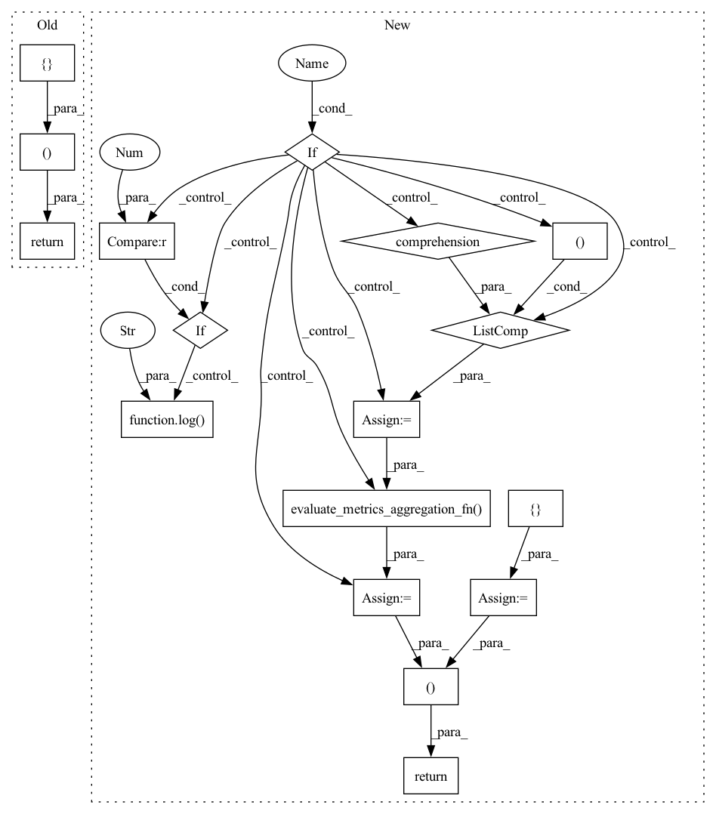

Pattern ID :10456
Before Change
for _, evaluate_res in results
]
)
return loss_aggregated, {}
After Change
)
// Aggregate custom metrics if aggregation fn was provided
metrics_aggregated = {}
if self.evaluate_metrics_aggregation_fn :
eval_metrics = [(res.num_examples, res.metrics) for _, res in results]
metrics_aggregated = self.evaluate_metrics_aggregation_fn( eval_metrics)
elif rnd == 1 :
log( WARNING, "No evaluate_metrics_aggregation_fn provided" )
return loss_aggregated, metrics_aggregated
In pattern: SUPERPATTERN
Frequency: 3
Non-data size: 17
Instances Fragment ID: 36453358
Project Name: adap/flower
Commit Name: 23617cd953af9d139eb6ecbaacb45750ebce181b
Time: 2022-03-25
Author: daniel@adap.com
File Name: src/py/flwr/server/strategy/fedavg.py
M Class Name: FedAvg
N Class Name: FedAvg
M Method Name: aggregate_evaluate(4)
N Method Name: aggregate_evaluate(4)
M Parent Class: Strategy
N Parent Class: Strategy
M File Name: src/py/flwr/server/strategy/fedavg.py
N File Name: src/py/flwr/server/strategy/fedavg.py
M Start Line: 233
M End Line: 239
N Start Line: 255
N End Line: 270
Before Change
// Do not aggregate if there are failures and failures are not accepted
if not self.accept_failures and failures:
return None, {}
return (
weighted_loss_avg(
[
(evaluate_res.num_examples, evaluate_res.loss)
for _, evaluate_res in results
]
),
{} ,
)
After Change
)
// Aggregate custom metrics if aggregation fn was provided
metrics_aggregated = {}
if self.evaluate_metrics_aggregation_fn :
eval_metrics = [(res.num_examples, res.metrics) for _, res in results]
metrics_aggregated = self.evaluate_metrics_aggregation_fn( eval_metrics)
elif rnd == 1 :
log( WARNING, "No evaluate_metrics_aggregation_fn provided" )
return loss_aggregated, metrics_aggregated
Fragment ID: 36453359
Project Name: adap/flower
Commit Name: 23617cd953af9d139eb6ecbaacb45750ebce181b
Time: 2022-03-25
Author: daniel@adap.com
File Name: src/py/flwr/server/strategy/qfedavg.py
M Class Name: QFedAvg
N Class Name: QFedAvg
M Method Name: aggregate_evaluate(4)
N Method Name: aggregate_evaluate(4)
M Parent Class: FedAvg
N Parent Class: FedAvg
M File Name: src/py/flwr/server/strategy/qfedavg.py
N File Name: src/py/flwr/server/strategy/qfedavg.py
M Start Line: 227
M End Line: 235
N Start Line: 249
N End Line: 264
Before Change
if completion_rate < self.completion_rate_evaluate:
// Not enough results for aggregation
return None, {}
return (
weighted_loss_avg(
[
(evaluate_res.num_examples, evaluate_res.loss)
for _, evaluate_res in results
]
),
{} ,
)
After Change
)
// Aggregate custom metrics if aggregation fn was provided
metrics_aggregated = {}
if self.evaluate_metrics_aggregation_fn :
eval_metrics = [(res.num_examples, res.metrics) for _, res in results]
metrics_aggregated = self.evaluate_metrics_aggregation_fn( eval_metrics)
elif rnd == 1 :
log( WARNING, "No evaluate_metrics_aggregation_fn provided" )
return loss_aggregated, metrics_aggregated
Fragment ID: 36453368
Project Name: adap/flower
Commit Name: 23617cd953af9d139eb6ecbaacb45750ebce181b
Time: 2022-03-25
Author: daniel@adap.com
File Name: src/py/flwr/server/strategy/fault_tolerant_fedavg.py
M Class Name: FaultTolerantFedAvg
N Class Name: FaultTolerantFedAvg
M Method Name: aggregate_evaluate(4)
N Method Name: aggregate_evaluate(4)
M Parent Class: FedAvg
N Parent Class: FedAvg
M File Name: src/py/flwr/server/strategy/fault_tolerant_fedavg.py
N File Name: src/py/flwr/server/strategy/fault_tolerant_fedavg.py
M Start Line: 108
M End Line: 116
N Start Line: 130
N End Line: 145